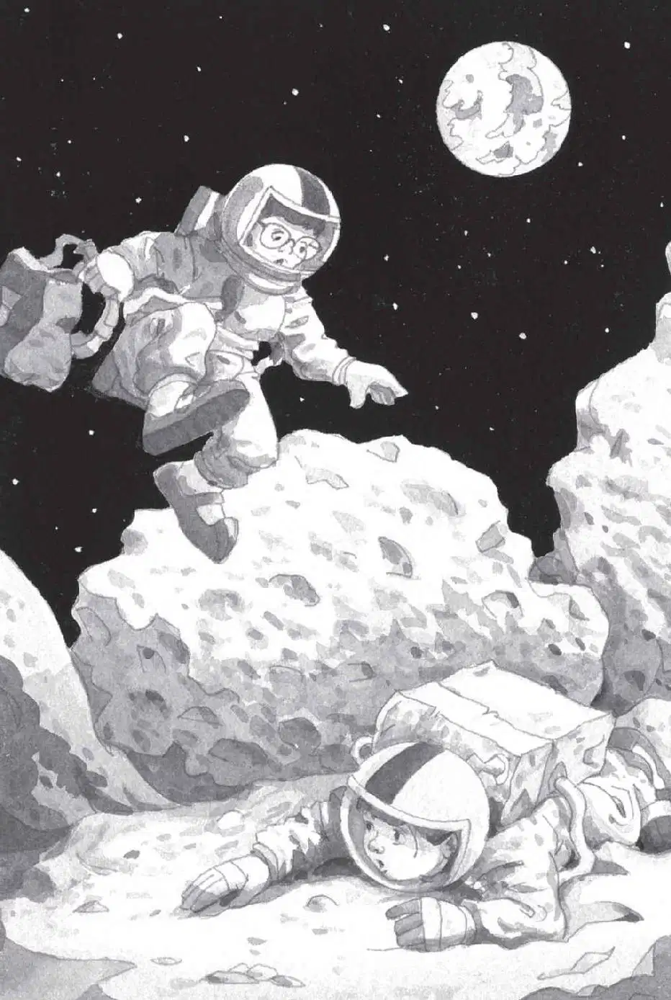

“Who is that?” said Jack.
“I don’t know,” said Annie. “But we’ll soon find out!” She started waving.
“No!” said Jack. He grabbed her arm. “Let’s go back to the base—before he gets here!”
“Why?” said Annie.
“We don’t know who he is!” said Jack. “We don’t know if he’s friendly or mean or what.”
“But we can’t go back,” said Annie. “We haven’t found the fourth M thing yet. We won’t be able to go home.”
“It doesn’t matter. We can lock the door at the moon base until he goes away,” said Jack. “Then we can get new air tanks!”
Jack hurried to the moon buggy. “Come on!” He jumped into the driver’s seat.
Annie gave a little wave to the dot in the sky. Then she climbed into the moon buggy.
The buggy took off.
“Careful!” said Annie.
They bumped over the rocks as Jack turned the buggy around. Then they zoomed toward the pass.
Jack steered around craters and rocks. More than once the buggy nearly tipped over.
“Whoa! Slow down!” said Annie.
They were almost at the mountain pass. Suddenly, a cloud of dust flew up in front of them. The ground trembled.
“Watch it!” cried Annie.
Jack couldn’t see a thing.
He stepped on the brake. The buggy jerked to a stop.
The dust settled.
A giant rock had fallen into the narrow pass. It was stuck between two walls of rock. They were trapped!
Jack quickly found a picture of a giant rock in the moon book. He read aloud:
Rocks of all sizes crash into the moon from outer space. These rocks are called meteorites.
“We’re lucky that meteorite didn’t land on us,” said Jack.
“Yeah, and I guess it’s too big to be the M thing,” said Annie. She had climbed out of the moon buggy and was standing by the meteorite.
It was more than twice as tall as she was.
Jack looked at the black sky. The flying thing was nowhere in sight—yet.
“We’ll have to jump over it,” Annie said.
“Jump? I don’t think so,” said Jack. “It’s too high.”
“I’m going to try anyway,” said Annie.
“Wait. Let’s think first,” said Jack.
But Annie was already backing up.
“One, two, three—go!” she shouted, and took giant, leaping steps toward the meteorite.
When Annie got close to the rock, she pushed off the ground. Then she flew through space and disappeared behind the meteorite.
“Annie!” Jack called.
There was no answer.
“Oh, brother,” Jack said. He backed up and took off toward the rock. He jumped as high as he could. Then he was flying through space.
Jack hit the ground and fell facedown into the dust.

Jack tried to stand. But his suit was too bulky. He tried to roll over. But his suit made even that impossible.
“Oh, no,” he groaned. “Not again.”
“Are you here?” asked Annie. “Did you make it?”
“Yes!” Jack was relieved to hear her voice. But he couldn’t turn his head to see her. He could only hear her over the radio.
“Can you help me up?” he asked.
“Nope,” said Annie.
“Why not?”
“I fell down, too,” she said.
“Oh, brother,” Jack sighed. “Now we are really in trouble.”
He tried to stand again. And failed.
“Can you see anything?” he asked.
“Just the sky,” said Annie. “Wow, is it weird…”
“I’m worried about our air tanks,” said Jack. “I feel like it’s been two hours.”
“Ja-ack…” said Annie.
“And what about that moon man?” said Jack. “Where did he go to?”
“Jack!” whispered Annie.
“What?”
“He’s here,” she said. “The moon man is here.”
“What?”
“He’s standing above me.”